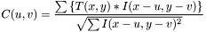
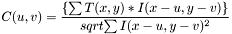
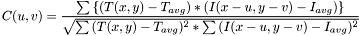

Class List
Here are the classes, structs, unions and interfaces with brief descriptions:
| ControlsWindow | Allows to modify parameters for the correlation operations, such as template size and scan interval. This class is a friend of Qcorr |
| CorrMethod | Dialog to select a method in which the correlation "template matching" operation will be based upon. The available correlation methods are the following:
- CROSS_CORR (cross correlation):

- SUM_SQ_DIFF (sum of squared differences):

- CORR_COEFF (correlation coefficient):

|
| ImgLabel | A sub-classed label widget implemented with the purpose of displaying the reference image on the left panel |
| Qcorr | A Digital Image Correlation Program (Template Matcher and Pixel Disparity Mapping) implemented in QT4 |
| TargetImgLabel | A sub-classed label widget implemented with the purpose of displaying the target image on the right panel |